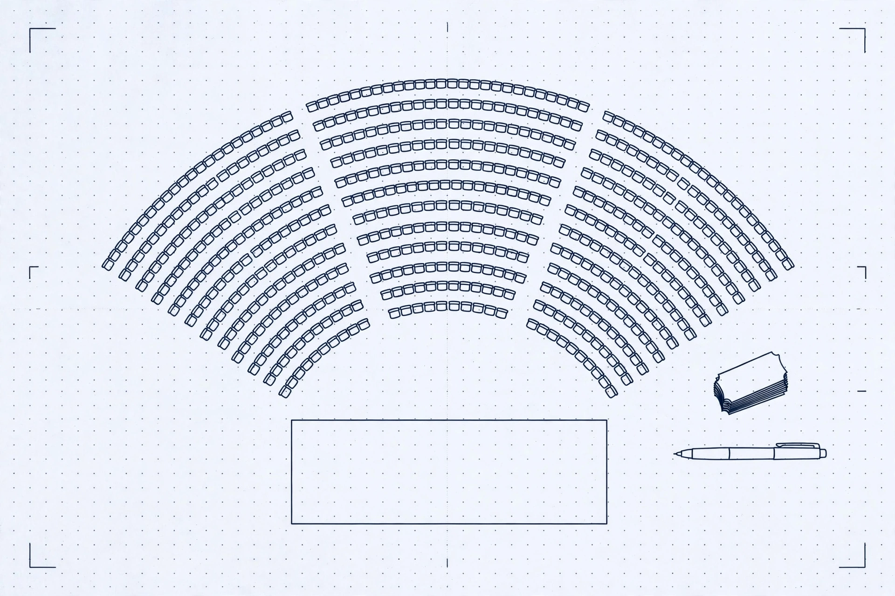

A promoter signs a guarantee with his own money. If the room does not fill, he eats it.

Venue plan, proof sheet. Blue-black line drawing on studio-white proof paper: seating bowl, stage, ticket stack and pen, with crop marks and a dot grid. No text or numbers are baked into the drawing — the break-even number on this page is real page text, computed live.
Check an offer
Start here — edit any field. This starting example is not a real deal.
No sign-in. One page, one money decision.
Verdict
Cannot break even in this room at this guarantee
Venue capacity unknown — Ticketmaster returned no capacity for this room. Break-even is shown as tickets needed, not as a sellout percentage. Verify room size before signing.
Break-even is of this room.
- Ticket price
- Net per ticket
- Capacity
Audience evidence
Opener shortlist, ranked for this city audience
Evidence details: demographics, trends, shared tags, overlap
Legs and sources
Gut vs Graph vs Web
Live lanes. An arm with no provider is shown as unavailable, never given a pick.
Receipts
Every claim, with the exact call behind it. Replay re-runs that call live.
How the number is computed
Recompute it yourself from the live verdict numbers.
Break-even tickets = ceil(guarantee ÷ (ticket price − variable cost per ticket))
When capacity is known and break-even tickets exceed it, the verdict is: “Cannot break even in this room at this guarantee.” When capacity is unknown, no sellout percentage is shown at all.
No personal data is sent to Qloo. Aggregate audiences only. If Qloo is not configured, the page fails closed with a visible 503 — never mock data. Qloo affinities are aggregate taste signals, not a promise a show will sell out.
Benchmark ledger
Committed, rerunnable Qloo-vs-Gut-vs-Web trials. Runs appear here only after real runs.